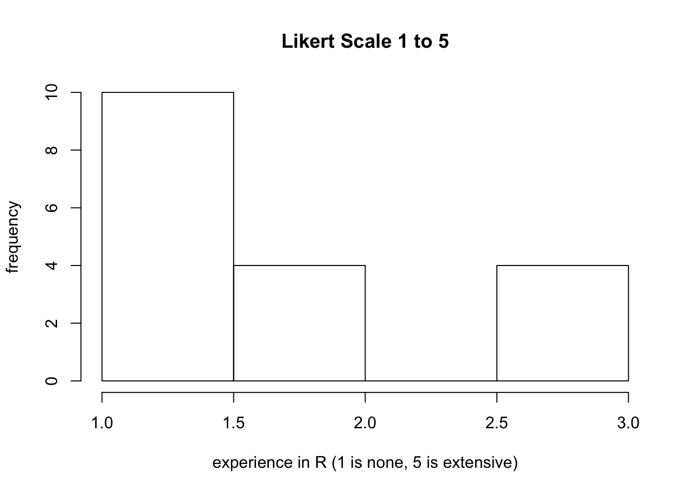
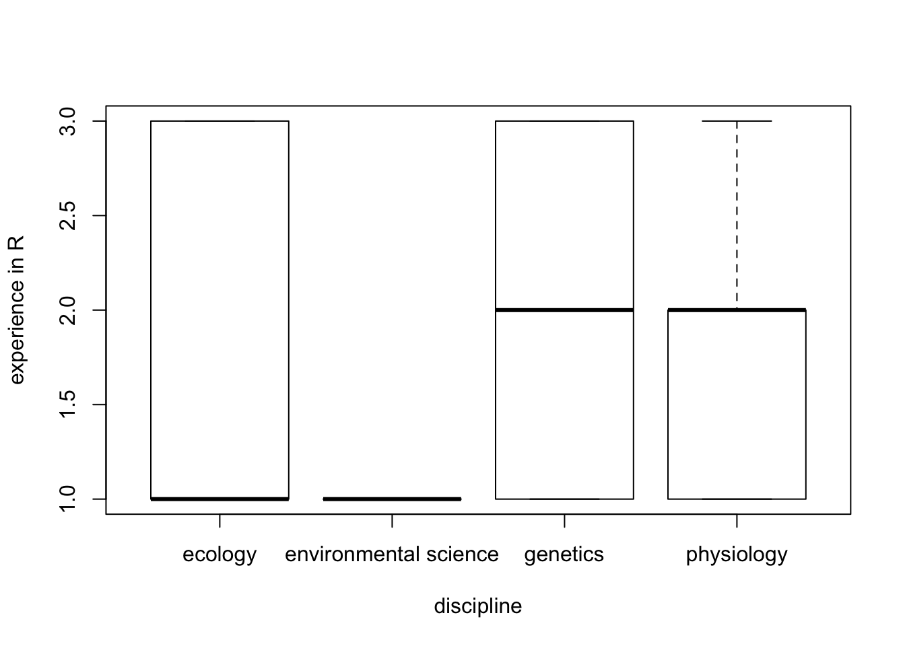
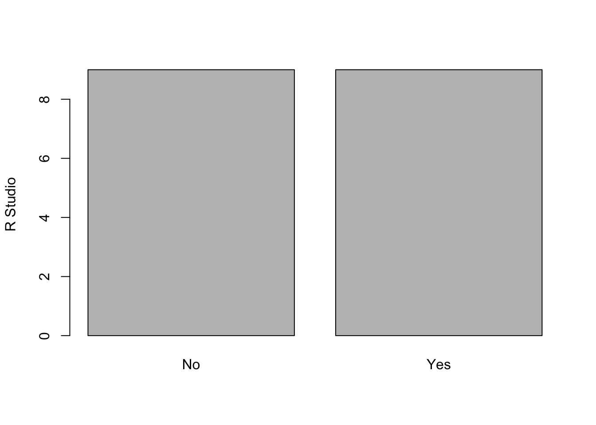
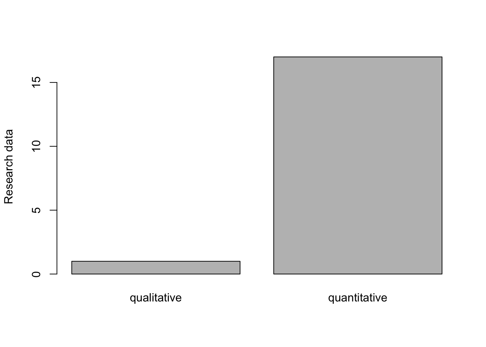
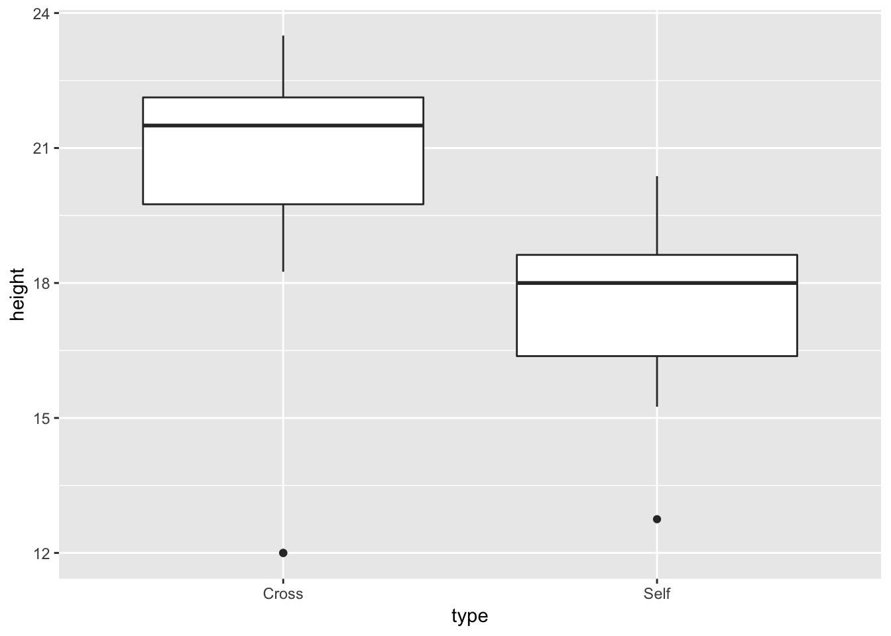
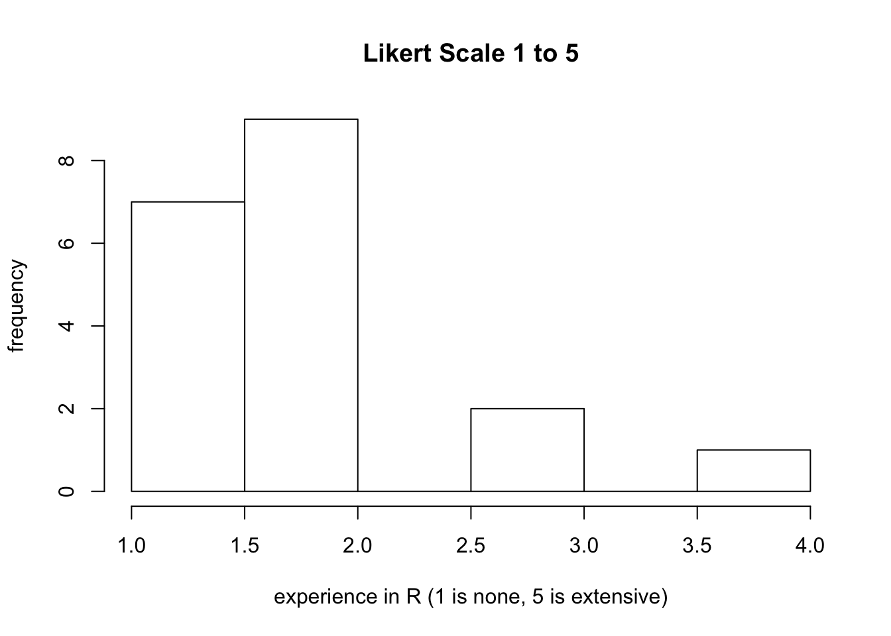
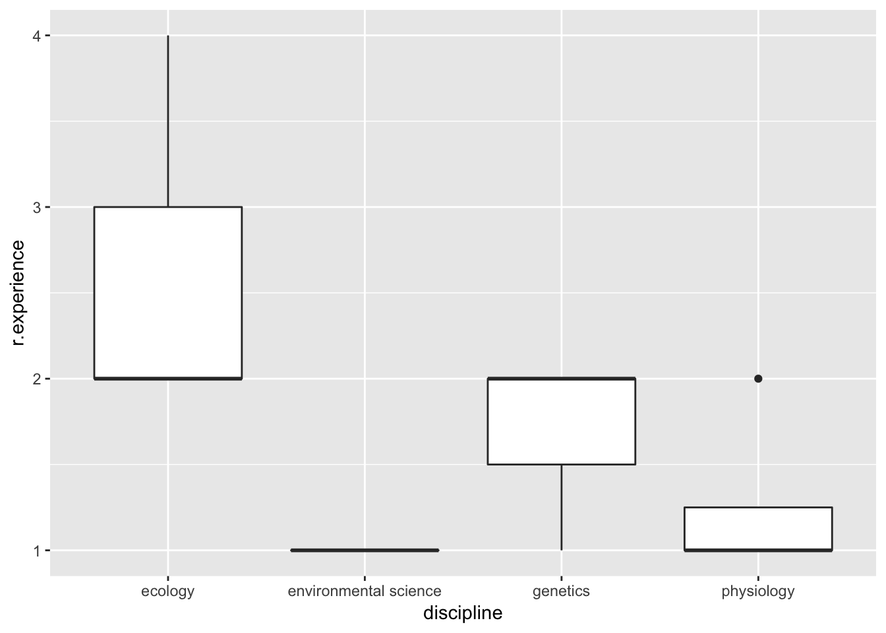
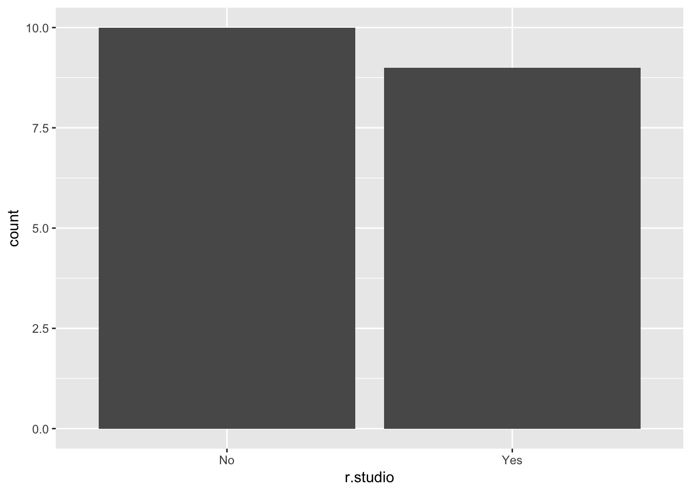
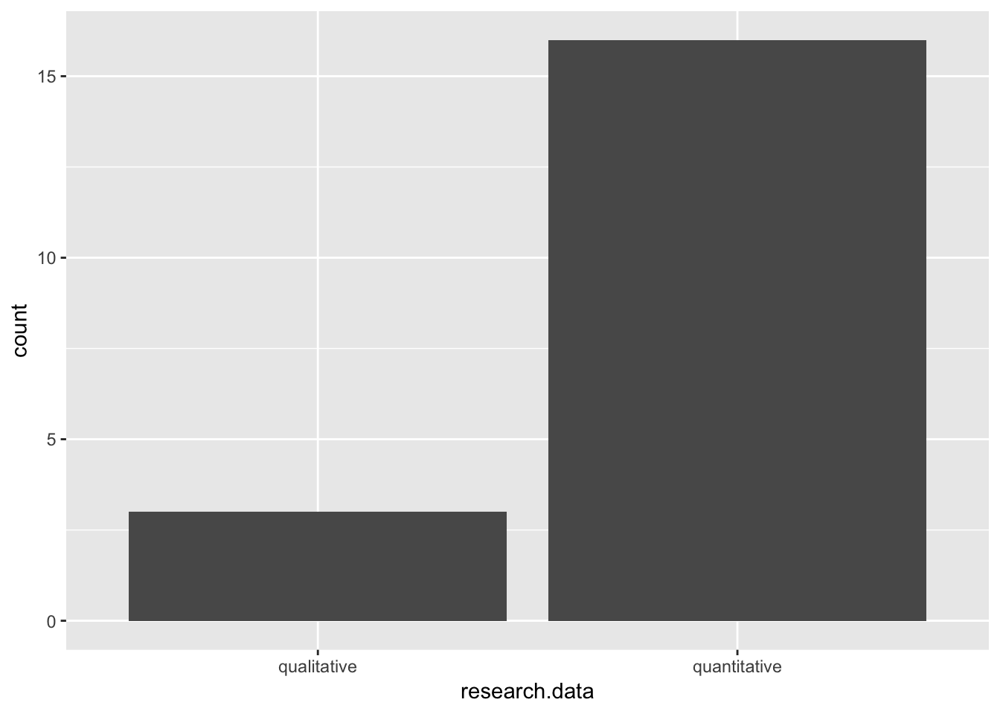

Biostatistical tools
want data. have data. will collect data.
assumption: in this course, you are here to work with data. data literacy IS data science.
Philosophy of R stats
Statistical thinking: likelihood, error, and effect sizes. Contemporary statisticians embrace and are mindful of these three key concepts in all research, data, and statistical inference examinations.
Modes of inference with your data: using data, what can you infer or do? 1. Data description 2. Likelihood 3. Estimation 4. Baysian inference - weight and include what we know 5. Prediction 6. Hypothesis testing 7. Decision making -balance gains and risks
This set of ideas provide the foundation for many data science and statistical approached to working with evidence within almost every domain of science.
Data viz first and foremost. Case study #1.
#blog post by Fisseha Berhane
library(ggplot2)
library(dplyr)
library(reshape2)
#Create four groups: setA, setB, setC and setD.
setA=select(anscombe, x=x1,y=y1)
setB=select(anscombe, x=x2,y=y2)
setC=select(anscombe, x=x3,y=y3)
setD=select(anscombe, x=x4,y=y4)
#Add a third column which can help us to identify the four groups.
setA$group ='SetA'
setB$group ='SetB'
setC$group ='SetC'
setD$group ='SetD'
#merge the four datasets
all_data=rbind(setA,setB,setC,setD) # merging all the four data sets
all_data[c(1,13,23,43),] # showing sample## x y group
## 1 10 8.04 SetA
## 13 8 8.14 SetB
## 23 10 7.46 SetC
## 43 8 7.91 SetD#compare summary stats
summary_stats =all_data%>%group_by(group)%>%summarize("mean x"=mean(x),
"Sample variance x"=var(x),
"mean y"=round(mean(y),2),
"Sample variance y"=round(var(y),1),
'Correlation between x and y '=round(cor(x,y),2)
)
models = all_data %>%
group_by(group) %>%
do(mod = lm(y ~ x, data = .)) %>%
do(data.frame(var = names(coef(.$mod)),
coef = round(coef(.$mod),2),
group = .$group)) %>%
dcast(., group~var, value.var = "coef")
summary_stats_and_linear_fit = cbind(summary_stats, data_frame("Linear regression" =
paste0("y = ",models$"(Intercept)"," + ",models$x,"x")))
summary_stats_and_linear_fit## group mean x Sample variance x mean y Sample variance y
## 1 SetA 9 11 7.5 4.1
## 2 SetB 9 11 7.5 4.1
## 3 SetC 9 11 7.5 4.1
## 4 SetD 9 11 7.5 4.1
## Correlation between x and y Linear regression
## 1 0.82 y = 3 + 0.5x
## 2 0.82 y = 3 + 0.5x
## 3 0.82 y = 3 + 0.5x
## 4 0.82 y = 3 + 0.5x#data viz instead as first step
ggplot(all_data, aes(x=x,y=y)) +geom_point(shape = 21, colour = "red", fill = "orange", size = 3)+
ggtitle("Anscombe's data sets")+geom_smooth(method = "lm",se = FALSE,color='blue') +
facet_wrap(~group, scales="free")
Outcome from stats first, data viz later (tricked), descriptive estimates of data can be deceptive. Draw first, then interpret.
Survey data from class. Case study #2.
#load class survey responses from google poll completed in class
survey<-read.csv("data/5081.survey.1.csv")
str(survey) #check data match what we collected## 'data.frame': 18 obs. of 4 variables:
## $ r.experience : int 2 1 2 3 1 1 3 1 1 3 ...
## $ discipline : Factor w/ 4 levels "ecology","environmental science",..: 4 3 4 4 1 4 1 1 1 3 ...
## $ research.data: Factor w/ 2 levels "qualitative",..: 2 2 2 2 2 2 2 1 2 2 ...
## $ r.studio : Factor w/ 2 levels "No","Yes": 1 2 2 2 1 1 2 1 2 1 ...#data viz
hist(survey$r.experience, xlab="experience in R (1 is none, 5 is extensive)", ylab="frequency", main="Likert Scale 1 to 5")
plot(survey$r.experience~survey$discipline, xlab="discipline", ylab="experience in R")
plot(survey$r.studio, ylab="R Studio")
plot(survey$research.data, ylab="Research data")
#observe patterns by checking plotsObservations from data viz We have limited experience in R. Experience in R varies by research discipline. A total of half the respondents have tried R Studio. Most participants will be working with quantitative data in their own research projects.
#Now, try some simple summary statistics.
summary(survey)## r.experience discipline research.data r.studio
## Min. :1.000 ecology :6 qualitative : 1 No :9
## 1st Qu.:1.000 environmental science:1 quantitative:17 Yes:9
## Median :1.000 genetics :2
## Mean :1.667 physiology :9
## 3rd Qu.:2.000
## Max. :3.000#Data summary looks reasonable based on plots, mean R experience is < 2
t.test(survey$r.experience, mu=1) #t-test if mean is different from 1##
## One Sample t-test
##
## data: survey$r.experience
## t = 3.3665, df = 17, p-value = 0.003664
## alternative hypothesis: true mean is not equal to 1
## 95 percent confidence interval:
## 1.248861 2.084472
## sample estimates:
## mean of x
## 1.666667t.test(survey$r.experience, mu=2) #t-test if mean is different from 2##
## One Sample t-test
##
## data: survey$r.experience
## t = -1.6833, df = 17, p-value = 0.1106
## alternative hypothesis: true mean is not equal to 2
## 95 percent confidence interval:
## 1.248861 2.084472
## sample estimates:
## mean of x
## 1.666667#A one sample t-test confirms we have a bit experience in R.
m1<-glm(r.experience~discipline, family = poisson, data = survey) #test for differenes between disciplines in R experience
m1 #model summary##
## Call: glm(formula = r.experience ~ discipline, family = poisson, data = survey)
##
## Coefficients:
## (Intercept) disciplineenvironmental science
## 5.108e-01 -5.108e-01
## disciplinegenetics disciplinephysiology
## 1.823e-01 -6.678e-10
##
## Degrees of Freedom: 17 Total (i.e. Null); 14 Residual
## Null Deviance: 6.808
## Residual Deviance: 6.371 AIC: 56.79anova(m1, test="Chisq") #test whether the differences in model are different## Analysis of Deviance Table
##
## Model: poisson, link: log
##
## Response: r.experience
##
## Terms added sequentially (first to last)
##
##
## Df Deviance Resid. Df Resid. Dev Pr(>Chi)
## NULL 17 6.8075
## discipline 3 0.43692 14 6.3706 0.9325#Too little evidence to be significantly different between disciplines.Case study #3.
#install.packages("SMPracticals")
library(SMPracticals)
library(tidyverse)
darwin## pot pair type height
## 1 I 1 Cross 23.500
## 2 I 1 Self 17.375
## 3 I 2 Cross 12.000
## 4 I 2 Self 20.375
## 5 I 3 Cross 21.000
## 6 I 3 Self 20.000
## 7 II 4 Cross 22.000
## 8 II 4 Self 20.000
## 9 II 5 Cross 19.125
## 10 II 5 Self 18.375
## 11 II 6 Cross 21.500
## 12 II 6 Self 18.625
## 13 III 7 Cross 22.125
## 14 III 7 Self 18.625
## 15 III 8 Cross 20.375
## 16 III 8 Self 15.250
## 17 III 9 Cross 18.250
## 18 III 9 Self 16.500
## 19 III 10 Cross 21.625
## 20 III 10 Self 18.000
## 21 III 11 Cross 23.250
## 22 III 11 Self 16.250
## 23 IV 12 Cross 21.000
## 24 IV 12 Self 18.000
## 25 IV 13 Cross 22.125
## 26 IV 13 Self 12.750
## 27 IV 14 Cross 23.000
## 28 IV 14 Self 15.500
## 29 IV 15 Cross 12.000
## 30 IV 15 Self 18.000data("darwin")
data <- darwin
data <- as_tibble(data)
data## # A tibble: 30 x 4
## pot pair type height
## * <fct> <fct> <fct> <dbl>
## 1 I 1 Cross 23.5
## 2 I 1 Self 17.4
## 3 I 2 Cross 12
## 4 I 2 Self 20.4
## 5 I 3 Cross 21
## 6 I 3 Self 20
## 7 II 4 Cross 22
## 8 II 4 Self 20
## 9 II 5 Cross 19.1
## 10 II 5 Self 18.4
## # ... with 20 more rowsggplot(darwin, aes(type, height)) +
geom_boxplot()
Case study #4.
library(tidyverse)
data <- read_csv("data/5081.survey.2.csv")
data## # A tibble: 21 x 4
## r.experience discipline research.data r.studio
## <int> <chr> <chr> <chr>
## 1 1 physiology quantitative No
## 2 1 physiology quantitative Yes
## 3 NA ecology quantitative Yes
## 4 2 ecology quantitative No
## 5 2 ecology quantitative No
## 6 2 physiology qualitative No
## 7 1 genetics quantitative No
## 8 1 environmental science quantitative No
## 9 2 genetics qualitative Yes
## 10 2 ecology quantitative Yes
## # ... with 11 more rowsdata <- na.exclude(data)
data## # A tibble: 19 x 4
## r.experience discipline research.data r.studio
## <int> <chr> <chr> <chr>
## 1 1 physiology quantitative No
## 2 1 physiology quantitative Yes
## 3 2 ecology quantitative No
## 4 2 ecology quantitative No
## 5 2 physiology qualitative No
## 6 1 genetics quantitative No
## 7 1 environmental science quantitative No
## 8 2 genetics qualitative Yes
## 9 2 ecology quantitative Yes
## 10 1 physiology quantitative No
## 11 3 ecology quantitative Yes
## 12 4 ecology quantitative Yes
## 13 3 ecology quantitative Yes
## 14 2 ecology quantitative Yes
## 15 2 genetics quantitative Yes
## 16 2 ecology quantitative Yes
## 17 1 environmental science quantitative No
## 18 1 environmental science quantitative No
## 19 2 ecology qualitative No#crimping code from last time to compare the same way
hist(data$r.experience, xlab="experience in R (1 is none, 5 is extensive)", ylab="frequency", main="Likert Scale 1 to 5")
ggplot(data, aes(discipline, r.experience)) +
geom_boxplot()
ggplot(data, aes(r.studio)) +
geom_bar()
ggplot(data, aes(research.data)) +
geom_bar()
Practical skill outcomes of R stats useful for competency test
Understand the difference between R and R Studio.
Use scripts or R Markdown files to save all your work.
Be prepared to share code.
Load data, clean data, visualize data, then and only then begin applying statistics.
Proximately: be able to use and work with dataframes, vectors, functions, tibbles, and libraries in R.
Readings
Ch1 and appendix in text.